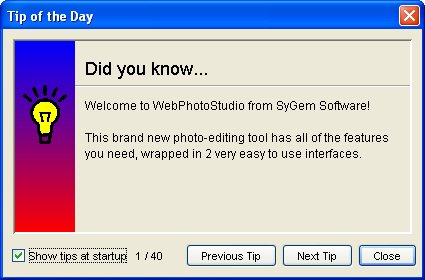
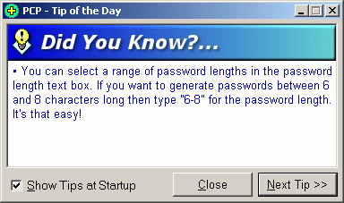
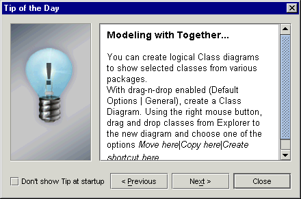
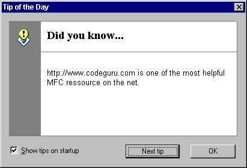
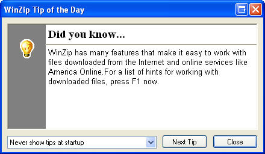
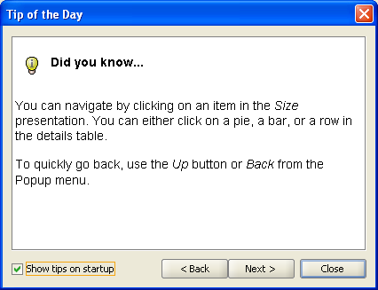
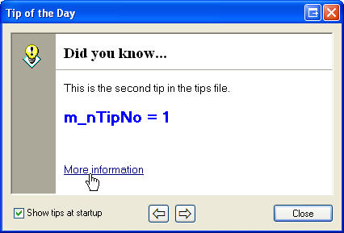
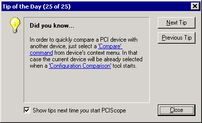
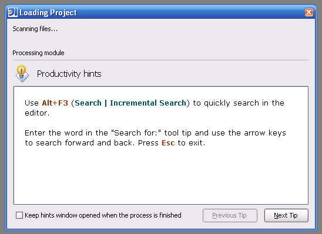
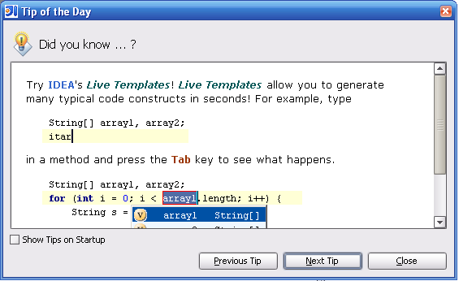

Existing Look And Feel
After a quick googling I found the following looks for tip of the day dialog:
Found in GnuCash: |
| It shows the number of tips...  |
Nice icon and good use of the titled border: |
| Too many gradient for my taste:  |
| Found in Borland Together - looks like a good fit for MetalLookAndFeel  |
| A typical Windows look   |
| JGoodies Look  |
|  |
|  |
Interesting use of the tip of the dialog (IntelliJ) where the dialog is mixed with background task processing:   |
Lessons Learned
- it exists different looks for the dialog
- some have previous/next/close, some have only previous/next
- some are showing the number of tips in the dialog, others in the title
- tip of the day dialog is more a tip of the day panel which could be embedded
- it appears the look and feel should take in charge the creation of the tip of the day dialog.
- a tip can be more than just some texts, it can have colors, even screenshots